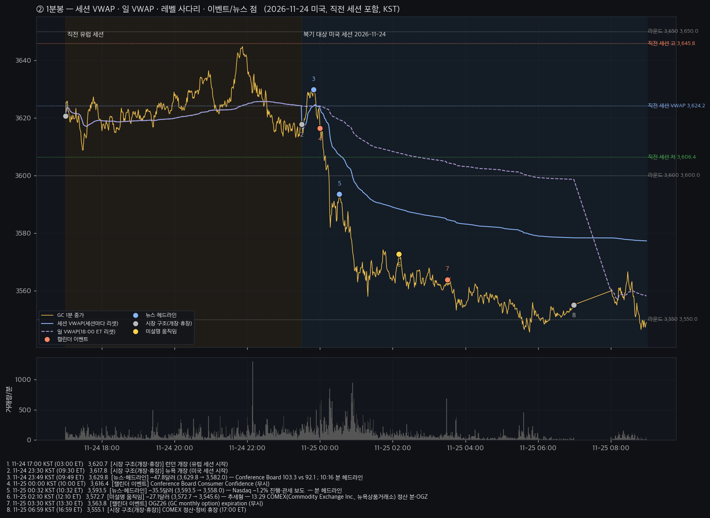
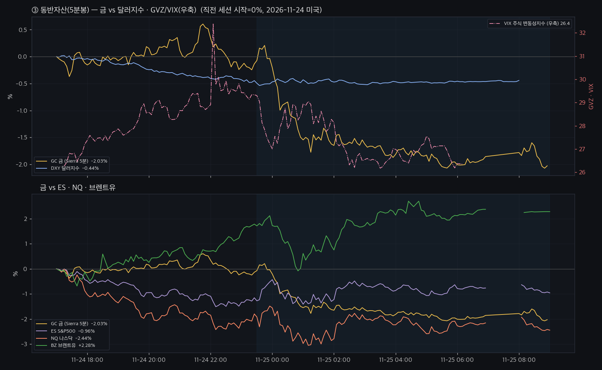
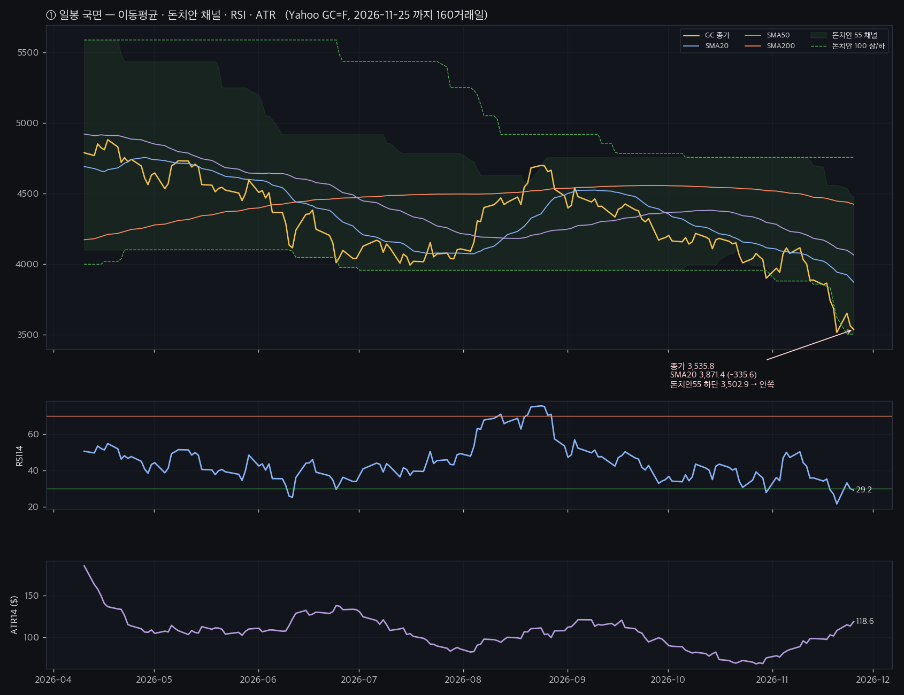

2026-11-24 미국 세션 복기 (09:30~18:59 ET / 23:30~08:59 KST)
작성 11-26 17:20 KST · (지연 — cron 로그인 실패 11-23 21:48~11-26 15:30, 11-26 소급) · 틱 GC_2026-11-24.p0720.ok window_utc 11-24 12:38~22:15 · bars_in_window 562 · written_kst 11-25 07:18 + GC_2026-11-24.us.ok 꼬리 23:00~23:53 UTC(Coordinated Universal Time, 협정 세계시) · bars_written 54 · empty_minutes 66(17:00~17:59 ET 정규 휴장) · written_kst 11-25 09:06 · 세션 510봉(전 구간) · 예측: (없음 — 11-24 22:15 예측 cron 로그인 실패)
■ 그림 — 세션 지도

■ 점수 na (예측 없음) — 실측만
| 항목 | 예측 | 실측 (틱 510봉) | 판정 |
|---|
| 고저폭 | (없음) | 85.9달러 = 2.37% (고 3,631.3 @09:40 ET → 저 3,545.4 @15:46 ET) | na |
| 가격대 | (없음) | 시가 3,617.8 기준 위 +13.5 / 아래 −72.4달러 | na |
| 방향 | (없음) | 하락 — 종가 3,548.9, 종가−시가 −68.9달러 (−1.90%) | na |
| 이벤트 | (없음) | 등급표 금지·주의 0건 · 무시 2건: Conference Board 소비자신뢰 10:00 ET 5분 \|최대\| 12.6달러 · OGZ26(COMEX Gold options December 2026, COMEX 금 옵션 2026년 12월물) 옵션 만기 13:30 ET 5분 2.0달러 | na |
| 킬스위치 | 5분 고저 ≥ 14.4달러 / 거래량 ≥ 1,865계약(세션 5분 중앙 4.8달러·373계약의 3배/5배) | 10:00·10:15·10:50 ET 3회(14.0달러·1,981계약 / 20.5달러·3,077계약 / 11.9달러·2,848계약) | — |
실측 출처 · 구간 · 개장 전
session_actuals.py GC_2026-11-24.csv us --events 09:00,10:00,13:30,16:30 --buckets 0-60,60-150,150-240,240-450,450-10000.
- 구간(고저 · 종−시, 달러): 09:30~ 49.6 · −27.0 / 10:30~ 36.9 · −27.1 / 12:00~ 13.2 · −1.7 / 13:30~ 19.3 · −7.0 / 18:00~ 20.7 · −10.4. 56,117계약, 1분 고저 p90(과거 90% 가 이 이하) 4.4달러.
- 개장 전: 11-23 종가 3,630.9 → 아시아 −10.7 → 유럽 −2.3 → 시가 3,617.8. 하락 중 −54.1 이 09:30~11:59 ET.
■ 핵심 메시지
1. AI 주식 랠리 소멸·관세 보도 날 금은 −68.9달러 — 은 −3.32% 동행(1분 r +0.81), 달러 몫 1%
2. Conference Board 소비자신뢰 103.3(컨센 92.1) 대폭 상회 → 15분 −19.3달러, 10:15~10:17 3,600 이탈 −16.4 = 세션 최대 1분 11.9달러(10:16 ET 848계약)
- 실제 103.3·이전 91.9(수정)(Conference Board, Reuters), 컨센 FF(Forex Factory, 포렉스팩토리(경제 캘린더 사이트))
ff_week_2026-W48.csv 92.1. 놀람 +11.2 → 금↓ 교과서 부호. 5분 12.6달러는 가족 p90 14.6 안(무시 등급, 프로필).
3. 같은 날 12월 인상 확률 98%(CME(Chicago Mercantile Exchange (CME Group), 시카고상품거래소 그룹) FedWatch(CME FedWatch Tool, CME 연준 금리 확률 도구)) — Williams·Waller 매파 발언 누적, 10년 ≈ +0.5bp 로 금리 몫은 작음
- CME Group · Williams 11-23 "할 일 남아"(NST/Reuters). 11-25 08:30 ET PCE(Personal Consumption Expenditures (price index), 개인소비지출 물가지수) 대기.
■ 움직임 타임라인 (틱, 전환 임계 9.6달러)
움직임 타임라인 — 15건 중 큰 다리 2건(#2·#4), 미설명 1건(#4), 나머지 소폭(#5·#9·#10 생략)
| # | 시작 KST (ET) | 지속 (분) | 움직임 (달러) | 가격 → 가격 | 거래량 배수 | 촉발 추정 1분 | 상태 |
|---|
| 2 | 23:49 (09:49) | 28 | −47.8 | 3,629.8 → 3,582.0 | 4.1배 | 10:16 ET (848) | Conference Board 10:00 상회 + 3,600 이탈 |
| 4 | 00:32 (10:32) | 47 | −35.5 | 3,593.5 → 3,558.0 | 3.8배 | 10:54 ET (948) | 미설명 → 주식 동반 청산 |
| 8 | 02:10 (12:10) | 216 | −27.1 | 3,572.7 → 3,545.6 | 0.9배 | 13:29 ET (687) | 추세형 — 13:29 COMEX(Commodity Exchange Inc., 뉴욕상품거래소) 정산 분·OGZ26 만기 |
■ 원인 추적 — 미설명 1건(#4) 동반 자산 공통 요인, #2 촉발 분 헤드라인 미확인
원인 추적
| 행 | 촉발 ET | 헤드라인·캘린더 밖 이벤트 | 동반 자산 같은 구간 (DXY(US Dollar Index, 달러 인덱스(주요 6통화 대비 달러 가치)) % · 10년 bp · 은 % · ES(E-mini S&P 500 futures, S&P500 미니 선물) % · BZ(ICE(Intercontinental Exchange, 인터컨티넨탈거래소) Brent crude futures (Yahoo ticker BZ=F), 브렌트유 선물 종목코드) %) | 원인 분류 | 교과서 고리 작동? |
|---|
| 2 | 10:00 → 10:16 | Conference Board 103.3 vs 92.1 (Conference Board); 10:16 분 헤드라인 (원인 미확인) | +0.08 · −0.0 · −2.30 · −0.07 · −0.34 | 지표(무시 등급) → 인상 기대 + 라운드 3,600 손절 | 부호 작동(상회→금↓), 달러·금리는 안 움직임 |
| 4 | 10:32~10:54 | Nasdaq −1.2% 진행·관세 보도 (Reuters/Fidelity) — 분 헤드라인 (원인 미확인) | −0.01 · −2.3 · −1.68 · −0.44 · −0.32 | 위험자산 동반 청산(현금 조달) | 금리↓(금 편)인데 금↓ — 고리 미작동 |
■ 동반 자산 · 경로 분해
세션 −68.9달러 중 달러 몫 −1달러(1%) · 금리 몫 ≈ 0 · 미설명 ≈ −68달러(은 동행 금속 청산)
- 세션 변화: DXY(US Dollar Index, 달러 인덱스) +0.01% · ZN(10년 국채 선물) −0.03%(≈ +0.5bp) · 은 −3.32% · ES(E-mini S&P 500 futures, S&P500 미니 선물) +0.31% · VIX(CBOE(Chicago Board Options Exchange, 시카고옵션거래소) Volatility Index, S&P500 변동성 지수) 29.5 → 26.4. GVZ(CBOE Gold ETF Volatility Index, 금 ETF 변동성 지수) 결측.
- 1분 동행 상관: 은 +0.81 · ES +0.55 · VIX −0.37 · ZN −0.21 · DXY −0.16.
- β(달러 1% 상승당 금 변화): 7일 기준선 −1.47 → 달러 몫 ≈ −1달러. 다리 6개 모두 은 같은 부호.

5분봉, 직전 세션 시작=0%. 위: 금 vs 달러지수, 아래: 금 vs ES·NQ(E-mini Nasdaq-100 futures, 나스닥100 선물)·브렌트유.
■ 교훈 → 학습원장
예측이 없어 적중/빗나감 판정 불가 — 원장 행 추가 없음
- 관찰(검증 대상): 11-23 주식↑ 날 금 −59, 11-24 주식↓ 날 금 −68.9 — 주식 부호와 무관한 금속 매도 이틀째, 달러 몫 20% → 1%.
■ 일봉 국면 (그림)

■ 빗나간 이유 (원인 A~H)
| 빗나간 것 | 원인 | 한 줄 |
|---|
| (예측 없음) | — | 11-24 22:15 예측 cron 로그인 실패(운영 사고, A~H 밖) |
복기 검색 (01_뉴스 채널 §4-4) — 켜진 트리거 R1, 4쿼리 / 0페이지(스니펫)
| 트리거 | 판정 | 알게 된 것 / 적은 곳 |
|---|
| R1 | 발화 — 최대 1분 11.9 ≥ p90 4.4, 10:16 ET(10:00 이벤트에서 16분, ±5분 밖) | CB(Conference Board, 컨퍼런스보드(미국 민간 경제조사기관)) 상회 뒤 3,600 이탈 · 분 헤드라인 미확인 → #2 · 01 §5 |
| R2 | 꺼짐 — CB 5분 12.6 < 가족 p90 14.6 | — |
| R4·R5 / R6·R7 | 예측 없음 / 꺼짐(관세·AI 는 캐시 유럽 절에 있음, 실제값 공식) | — |
search_used R1:발화/부분. 데이터 축적: candidates/Conference Board_surprise.csv 신설(2026-11-24 103.3/92.1/91.7) · occurrence_append 11-24 Conference Board·OG(Gold options (COMEX ticker), COMEX 금 옵션 종목코드) option expiry 행 이미 있음(새 행 0, deferred 5건 = 일요일 개장 등 과거분).
■ 개선 제안 (규칙표 수정 후보 — 월간 갱신 때 판단)
- Conference Board(무시): 놀람 +11.2 에 15분 20.5달러·60분 56.5달러 — 5분 p90 안이지만 15분·60분 이동이 커서 '놀람 ≥ +5 이면 주의 시각' 조건 후보(놀람 분석 1건째).
- 'AI·기술주 → 금 청산형'(01 §5) 사례 추가 — 12-02 월간 갱신의 가족 F 부호 조건 승격 안건에 11-24 미국 포함.
■ 미확인
못 확인한 것 2건 — #2 10:16 ET 분 헤드라인 · #4 10:32~10:54 ET 분 헤드라인
출처·파일
- 데이터:
bars/GC_2026-11-24.csv(.p0720.ok + .us.ok) · session_actuals.py · gold_session_moves.py · gold_session_driver_decomp.py · gold_event_occurrence_append.py · 점수.csv - 볼트: 2026-11-24_유럽 · 2026-11-24
- 웹: 본문 링크 참조(캐시 2026-11-24 '## 복기 미국')